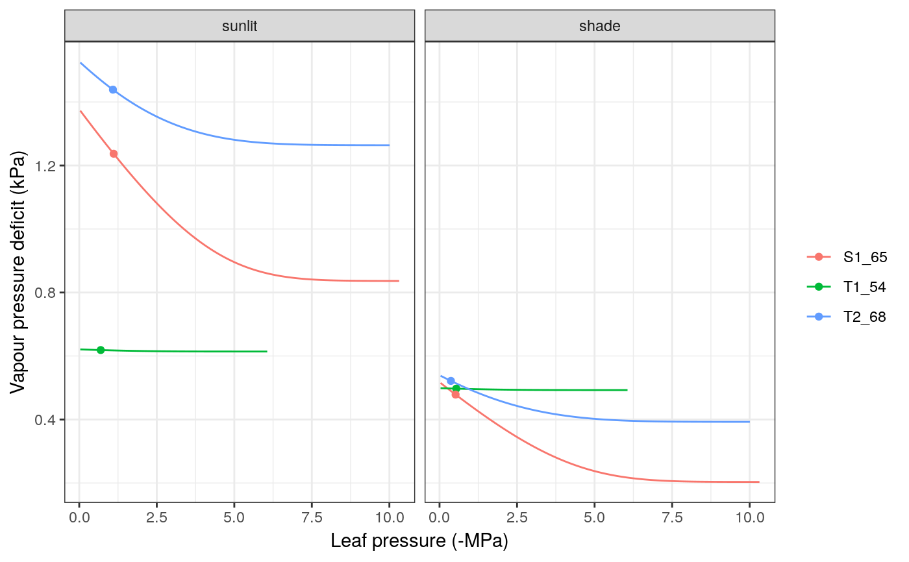

transpiration.RdSet of high-level functions used in the calculation of stomatal conductance and transpiration. Function transp_profitMaximization calculates gain and cost functions, as well as profit maximization from supply and photosynthesis input functions. Function transp_stomatalRegulationPlot produces a plot with the cohort supply functions against water potential and a plot with the cohort photosynthesis functions against water potential, both with the maximum profit values indicated.
transp_profitMaximization(supplyFunction, photosynthesisFunction, type, Gwmin, Gwmax, kleafmax = NA) transp_transpirationGranier(x, soil, meteo, day, modifyInput = TRUE) transp_transpirationSperry(x, soil, meteo, day, latitude, elevation, slope, aspect, canopyEvaporation = 0, snowMelt = 0, soilEvaporation = 0, stepFunctions = NA, modifyInput = TRUE) transp_stomatalRegulationPlot(x, soil, meteo, day, timestep, latitude, elevation, slope = NA, aspect = NA, type="E")
| supplyFunction | Water supply function (see |
|---|---|
| photosynthesisFunction | Function returned by |
| Gwmin, Gwmax | Minimum and maximum stomatal conductance (mol·m-2·s-1). |
| kleafmax | Maximum leaf hydraulic conductance (flow per pressure drop). |
| x | An object of class |
| soil | An object of class |
| meteo | A data frame with daily meteorological data series:
|
| day | An integer to identify a day within |
| timestep | An integer between 1 and |
| latitude | Latitude (in degrees). |
| elevation, slope, aspect | Elevation above sea level (in m), slope (in degrees) and aspect (in degrees from North). |
| canopyEvaporation | Canopy evaporation (from interception) for |
| soilEvaporation | Bare soil evaporation for |
| snowMelt | Snow melt values for |
| stepFunctions | An integer to indicate a simulation step for which photosynthesis and profit maximization functions are desired. |
| type | In function |
| modifyInput | Boolean flag to indicate that the input |
Details of the transpiration submodel are given in a vignette.
Function transp_transpirationGranier and transp_transpirationSperry return a list with the following elements:
"cohorts": A data frame with cohort information, copied from spwbInput.
"Plants": A data frame of results for each plant cohort:
"LAI": Leaf area index of the plant cohort.
"AbsorbedSWRFraction": Fraction of SWR absorbed by each cohort.
"Transpiration": Transpirated water (in mm) corresponding to each cohort.
"Photosynthesis": Net photosynthesis (in gC/m2) corresponding to each cohort.
"psi": Water potential (in MPa) of the plant cohort (average over soil layers).
"DDS": Daily drought stress [0-1] (relative whole-plant conductance).
transp_transpirationSperry, element "Plants" includes:
"Extraction": Water extracted from the soil (in mm) for each cohort.
"RootPsi": Minimum water potential (in MPa) at the root collar.
"StemPsi": Minimum water potential (in MPa) at the stem.
"LeafPsiMin": Minimum (predawn) water potential (in MPa) at the leaf (representing an average leaf).
"LeafPsiMax": Maximum (midday) water potential (in MPa) at the leaf (representing an average leaf).
"LeafPsiMin_SL": Minimum (predawn) water potential (in MPa) at sunlit leaves.
"LeafPsiMax_SL": Maximum (midday) water potential (in MPa) at sunlit leaves.
"LeafPsiMin_SH": Minimum (predawn) water potential (in MPa) at shade leaves.
"LeafPsiMax_SH": Maximum (midday) water potential (in MPa) at shade leaves.
"StemPLC": Proportion of conductance loss in stem.
"StemRWC": Relative water content of symplastic stem tissue.
"LeafRWC": Relative water content of symplastic leaf tissue.
"dEdP": Overall soil-plant conductance (derivative of the supply function).
"Extraction": A data frame with mm of water extracted from each soil layer (in columns) by each cohort (in rows).
The remaining items are only given by transp_transpirationSperry:
"EnergyBalance": When using the 'Sperry' transpiration mode, the model performs energy balance of the stand and 'EnergyBalance' is a list with the following:
"Temperature": A data frame with the temperature of the atmosphere ('Tatm'), canopy ('Tcan') and soil ('Tsoil.1', 'Tsoil.2', ...) for each time step.
"CanopyEnergyBalance": A data frame with the components of the canopy energy balance (in W/m2) for each time step.
"SoilEnergyBalance": A data frame with the components of the soil energy balance (in W/m2) for each time step.
"RhizoPsi": Minimum water potential (in MPa) inside roots, after crossing rhizosphere, per cohort and soil layer.
"ExtractionInst": Water extracted by each plant cohort during each time step.
"PlantsInst": A list with instantaneous (per time step) results for each plant cohort:
"E": A data frame with the cumulative transpiration (mm) for each plant cohort during each time step.
"An": A data frame with the cumulative net photosynthesis (gC/m2) for each plant cohort during each time step.
"Sunlitleaves" and "ShadeLeaves": Lists with instantaneous (for each time step) results for sunlit leaves and shade leaves and the following items:
"LAI": Leaf area index of (sunlit or shade) leaves of the plant cohort.
"Abs_SWR": A data frame with instantaneous absorbed short-wave radiation (SWR).
"Abs_LWR": A data frame with instantaneous absorbed long-wave radiation (LWR).
"An": A data frame with instantaneous net photosynthesis (in micromol/m2/s).
"Ci": A data frame with instantaneous intercellular CO2 concentration (in ppm).
"GW": A data frame with instantaneous stomatal conductance (in mmol/m2/s).
"VPD": A data frame with instantaneous vapour pressure deficit (in kPa).
"Temp": A data frame with leaf temperature (in degrees Celsius).
"Psi": A data frame with leaf water potential (in MPa).
"dEdPinst": A data frame with the slope of the plant supply function (an estimation of whole-plant conductance).
"PsiRoot": A data frame with root crown water potential (in MPa) for each plant cohort during each time step.
"PsiStem": A data frame with stem water potential (in MPa) for each plant cohort during each time step.
"PsiLeaf": A data frame with leaf (average) water potential (in MPa) for each plant cohort during each time step.
"PLCstem": A data frame with the proportion loss of conductance [0-1] for each plant cohort during each time step.
"RWCstem": A data frame with the (average) relative water content of symplastic stem tissue [0-1] for each plant cohort during each time step.
"RWCleaf": A data frame with the relative water content of symplastic leaf tissue [0-1] for each plant cohort during each time step.
"PWB": A data frame with plant water balance (extraction - transpiration).
"LightExtinction": A list of information regarding radiation balance through the canopy, as returned by function light_instantaneousLightExtinctionAbsortion.
"WindExtinction": A numeric vector with the wind speed (in m/s) for each plant cohort.
"SupplyFunctions": If stepFunctions is not missing, a list of supply functions, photosynthesis functions and profit maximization functions.
Function transp_profitMaximization returns a list with the following elements:
Cost: Cost function [0-1].
Gain: Gain function [0-1].
Profit: Profit function [0-1].
iMaxProfit: Index corresponding to maximum profit (starting from 0).
Sperry, J. S., M. D. Venturas, W. R. L. Anderegg, M. Mencuccini, D. S. Mackay, Y. Wang, and D. M. Love. 2016. Predicting stomatal responses to the environment from the optimization of photosynthetic gain and hydraulic cost. Plant Cell and Environment.
#Load example daily meteorological data data(examplemeteo) #Load example plot plant data data(exampleforest) #Default species parameterization data(SpParamsMED) #Initialize soil with default soil params (2 layers) examplesoil = soil(defaultSoilParams(2)) #Initialize control parameters control = defaultControl() #Initialize input x = forest2spwbInput(exampleforest,examplesoil, SpParamsMED, control) # Transpiration according to Granier's model, plant water potential # and plant stress for a given day transp_transpirationGranier(x, examplesoil, examplemeteo, 1, modifyInput = FALSE)#> $cohorts #> SP Name #> T1_54 54 Pinus halepensis #> T2_68 68 Quercus ilex #> S1_65 65 Quercus coccifera #> #> $Plants #> LAI AbsorbedSWRFraction Transpiration Photosynthesis psi #> T1_54 0.81670117 0.23363185 0.13418193 0.14397814 -0.033 #> T2_68 0.79779523 0.23244833 0.13350249 0.14324909 -0.033 #> S1_65 0.08913325 0.01904071 0.01093569 0.01173408 -0.033 #> DDS #> T1_54 3.113699e-06 #> T2_68 9.225785e-07 #> S1_65 3.892129e-07 #> #> $Extraction #> 1 2 #> T1_54 0.025945935 0.108235996 #> T2_68 0.025814555 0.107687934 #> S1_65 0.009821429 0.001114265 #>#Switch to 'Sperry' transpiration mode control$transpirationMode="Sperry" #Initialize soil with default soil params (2 layers) examplesoil2 = soil(defaultSoilParams(2)) #Initialize input x2 = forest2spwbInput(exampleforest,examplesoil2, SpParamsMED, control)#> Warning: Soil pedotransfer functions set to Van Genuchten ('VG').# Stomatal VPD curve and chosen value for the 12th time step at day 100 transp_stomatalRegulationPlot(x2, examplesoil2, examplemeteo, day=100, timestep = 12, latitude = 41.82592, elevation = 100, type="VPD")